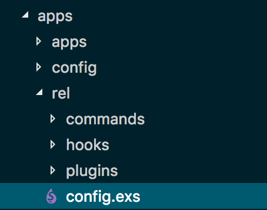
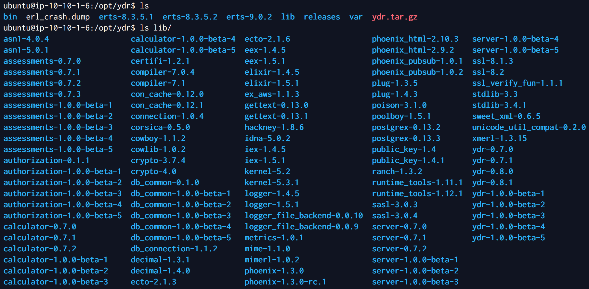
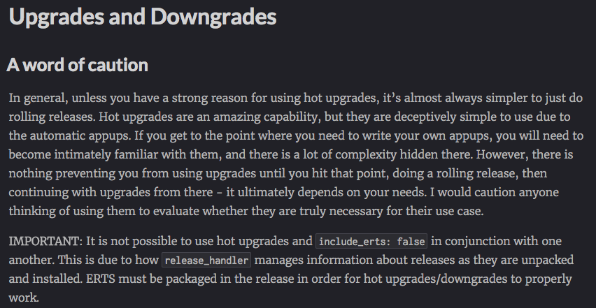
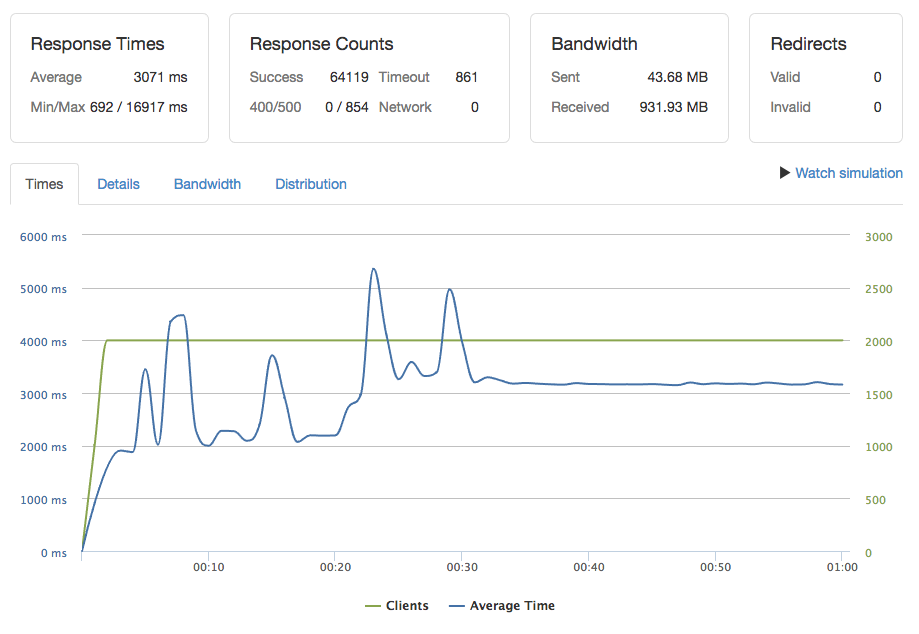
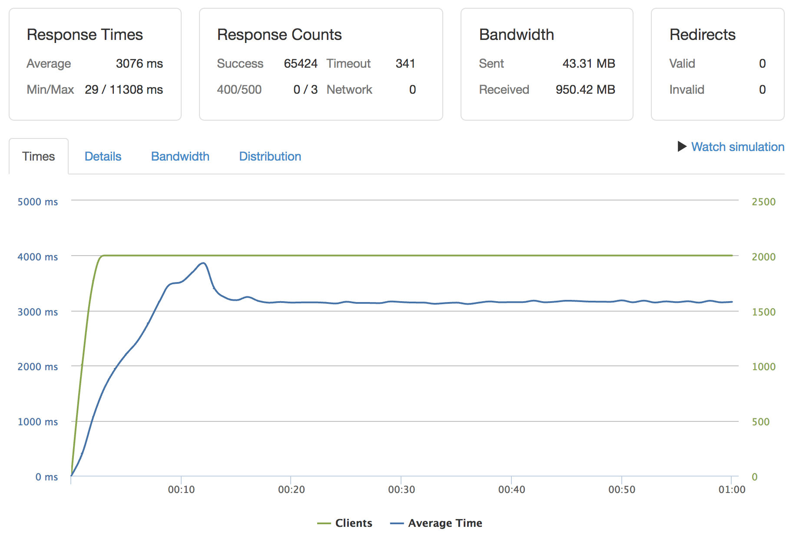

class: center, middle # Going to Production with Phoenix and Distillery --- class: center, middle ## Bryan Naegele Dev Lead @ Integrity STL-Tech - @bryannaegele --- class: center, middle # I WROTE A THING! --- background-image: url(images/joy.jpg) --- background-image: url(images/TheNet01.jpg) --- class: center, middle # How Should I Deploy This? (The world needs pizza!) --- # The Basics > When preparing an application for deployment, there are three main steps: > > Handling of your application secrets > > Compiling your application assets > > Starting your server in production > > How those are exactly handled depends on your deployment infrastructure. We have included a guide specific to Heroku, and for anyone not using Heroku, .bold[we recommend using Distillery.] _https://hexdocs.pm/phoenix/deployment.html_ --- # Option 1: Deploy-Source -- - I know how to: Git push, tar, rsync, etc. -- - Elixir can compile on run with Mix -- ```bash # Initial setup $ mix deps.get --only prod $ MIX_ENV=prod mix compile # Compile assets $ brunch build --production $ MIX_ENV=prod mix phoenix.digest # Custom tasks (like DB migrations) $ MIX_ENV=prod mix ecto.migrate # Finally run the server $ PORT=4001 MIX_ENV=prod mix phoenix.server ``` ??? * Just toss it up there! method * If I skim the docs in the Phoenix guide, the instructions are very similar to my dev workflow --- # Option 1: Deploy-Source ## Pros * Familiar for some users * Guaranteed* to run on the target system -- ## Cons * Target needs required Elixir & Erlang versions installed * Builds are potentially not reproducible * Longer deployment times * Requires egress to Hex.pm * No hot upgrades/downgrades * Introduces potential attack vectors --- # Option 2: Docker Image Containers for all the things! -- ## Pros * Reproducible build * Production / Development environment "parity" * Common pattern in other languages / frameworks, esp. Node -- ## Cons * Requires Docker on the target machine * Extra setup, config, and maintenance * Erlang VM is extremely good at managing resources * Same attack vectors in Option 1 still potentially present ??? Persistent file storage (mnesia/dets) --- # Option 3: Distillery ## Pros * Creates an OTP Release * Single tarball * Erlang / Elixir not required to be installed on target * Hot upgrades / downgrades * Executable option for command line apps -- ## Cons * Release must be compiled on the same target kernel or needs target libs present when compiling * Additional configuration to learn --- # What is Distillery? Distillery… -- …is the successor to EXRM, both by Paul Schoenfelder (bitwalker) -- …is the recommended deployment method by Elixir lang and the Phoenix project -- …may become part of Mix in the future -- > "…takes your Mix project and produces and Erlang/OTP release, a distilled form of your raw application's components; a single package which can be deployed anywhere, independently of an Erlang/Elixir installation. No dependencies, no hassle." > _https://github.com/bitwalker/distillery/blob/master/README.md_ ??? Caveat on "no dependencies" is needing to build on the target kernel, so Docker is pretty essential --- # Getting Started ```Elixir defp deps do [[:distillery, "~> 1.5", runtime: false]] end ``` -- ```bash $ mix deps.get ``` -- ```bash $ mix release.init ``` ??? runtime: false means this is not included in the release or started automatically --- # Default Folder Structure  ??? explain each folder --- # config.exs ```Elixir # ./rel/config.exs use Mix.Releases.Config, default_release: :foo, default_environment: Mix.env environment :dev do set dev_mode: true set include_erts: false set include_system_libs: false set cookie: :dev end environment :prod do set include_erts: true set include_system_libs: true set cookie: :prod end release :foo do set version: current_version(:foo) end ``` ??? https://hexdocs.pm/distillery/getting-started.html#configuration --- # Update Phoenix Config ```Elixir # ./server/config/prod.exs config :phoenix_distillery, PhoenixDistillery.Endpoint, http: [port: {:system, "PORT"}], url: [host: "localhost", port: {:system, "PORT"}], cache_static_manifest: "priv/static/cache_manifest.json", server: true, root: ".", version: Application.spec(:phoenix_distillery, :vsn) ``` ??? Need to add last three lines to your server's prod.exs server - configures the endpoint to boot the Cowboy application http endpoint on start. root - configures the application root for serving static files version - ensures that the asset cache will be busted on versioned application upgrades (more on this later) --- # Release Versioning OTP uses strict semver to manage versions -- ### Setting the version explicitly ```Elixir release :your_app do set version: "1.0.0" ... end ``` -- ### Pegging the version to an application ```Elixir release :your_app do set version: Application.spec(:myapp, :vsn) set version: current_version(:myapp) end ``` ??? Semver - means a css change requires a full semver release First version for umbrellas, second for single apps --- # Compiling the Release ```bash $ ./node_modules/brunch/bin/brunch b -p ``` ```bash $ MIX_ENV=prod mix phoenix.digest ``` ```bash $ MIX_ENV=prod mix release --env=prod ``` ??? envs - MIX_ENV for compilation, --env to set options (staging/prod) --- # Deploying the Release ```bash $ rsync -a -e 'ssh -i target.pem' ./_build/releases/ & \ ubuntu@ec2-blah-blah.com:/opt/myapp/releases ``` -- ```bash # ssh session to target $ cd /opt/myapp $ cp ./releases/<<version>>/myapp.tar.gz ./myapp.tar.gz $ tar -xzf myapp.tar.gz $ bin/myapp start ``` --- # Target File Structure  --- # Who Watches the Watchmen? -- ## systemd ```bash [Unit] Description=Runner for Your App After=network.target [Service] Type=forking WorkingDirectory=/opt/your_app EnvironmentFile=/etc/default/your_app.env ExecStart=/opt/ydr/bin/your_app start ExecStop=/opt/ydr/bin/your_app stop User=ubuntu Restart=on-failure RestartSec=5 SyslogIdentifier=your_app LimitNOFILE=64000 [Install] WantedBy=multi-user.target ``` ??? After network.target - ensures networking is initialized EnvironmentFile - loads env variables from a file which are only available to this process LimitNOFILE - must be specified here to increase NOFILE count when running with systemd --- # systemd ```bash [Unit] Description=Runner for Your App After=network.target [Service] ... ``` ```bash $ vi /etc/systemd/system/your_app.service $ systemctl daemon-reload $ systemctl enable your_app.service # starts permanently $ systemctl start|stop|restart your_app.service # to manage going forward ``` --- name: tips-tricks-1 class: middle, center # Tips, Tricks, and Caveats --- # Hot Upgrades - Deceptively Simple -- * default appups are automatically created * custom appups must be placed in the transient `_build` folder * the transient nature of the `_build` folder and appups can make CI tricky -- https://github.com/bitwalker/distillery/issues/302 ??? Custom appup overhead is a bad story right now, issue 302 seeks to make it better --- # Upgrades / Downgrades  --- class: center, middle # The NeverEnding Application ### James Gray & Paul Dawson ### Lonestar ElixirConf 2017 https://www.youtube.com/watch?v=xzY1C_O3gDk --- # Overlays > Overlays allow you to modify the contents of the release, you may add/symlink files, create directories, and generate files based on templates. * uses eex for templating * exposes some variables about the release * allows for setting of custom variables --- # Overlays Tip - Set the epmd Port ```Elixir set overlays: [ {:template, "rel/templates/vm.args.eex", "releases/<%= release_version %>/vm.args"} ] set overlay_vars: [ inet_dist_listen_min: 9001, inet_dist_listen_max: 9001 ] ``` --- # vm.args.eex ```eex ## Name of the node -name <%= release_name %>@127.0.0.1 ## Cookie for distributed erlang -setcookie <%= release.profile.cookie %> -kernel inet_dist_listen_min <%= inet_dist_listen_min %> inet_dist_listen_max <%= inet_dist_listen_max %> ## Heartbeat management; auto-restarts VM if it dies or becomes unresponsive ## (Disabled by default..use with caution!) ##-heart ## Enable kernel poll and a few async threads ##+K true ##+A 5 ## Increase number of concurrent ports/sockets -env ERL_MAX_PORTS 64000 ## Tweak GC to run more often ##-env ERL_FULLSWEEP_AFTER 10 # Enable SMP automatically based on availability -smp auto ``` --- # Connecting to the Remote Node ```bash $ ssh -N -L 9001:localhost:9001 -L 4369:localhost:4369 user@remoteip ``` -- In a separate terminal… ```bash $ erl -name debug@127.0.0.1 -setcookie 123 -run observer ``` --- # Runtime Configuration - Environment Variables ```Elixir cookie: System.get_env(:cookie) # System.get_env/1 evaluates at compile time ``` -- ```Elixir cookie: "${cookie}" ``` ```bash $ REPLACE_OS_VARS=true bin/myapp start ``` --- # Runtime Configuration - Dependencies If you have dependencies which require runtime configuration, you should add them to `included_applications` and start them as part of your supervisor tree, as shown below. ```Elixir defmodule MyApplication do use Application def start(_type, _args) do import Supervisor.Spec # Do your configuration here Application.put_env(:some_dep, :some_key, some_val) children = [ # You need to replace `:some_dep` here with the name of the module # containing `:some_dep`'s application module. For example, our application # is called `:myapp`, but our application module is `MyApplication`, so we would # use `MyApplication` in the supervisor specification here, not `:myapp`. # You can easily determine this by looking at the `mix.exs` of the dependency, or the # `.app` file in an Erlang application. supervisor(:some_dep, [:normal, []], function: :start), ... ] Supervisor.start_link(children, opts) end end ``` ??? https://hexdocs.pm/distillery/runtime-configuration.html#configuring-dependencies --- class: center, middle # Custom Commands --- # Custom Commands * Great way to expose one-off tasks * Simple to implement * Can be reused in custom Mix tasks or multiple commands --- # Custom Command - Upload Assets to a CDN ```Elixir alias ExAws.S3 defmodule Server.ReleaseTasks do @start_apps [:poison, :hackney, :ex_aws] def upload_assets_to_cdn do IO.puts "Starting dependencies.." Enum.each(@start_apps, &Application.ensure_all_started/1) IO.puts "Pushing assets.." Path.wildcard(["#{:code.priv_dir(:server)}/static/**"]) ... |> Task.async_stream(&upload_file/1, max_concurrency: 10) |> Stream.run() # Signal shutdown IO.puts "Success!" :init.stop() end end ``` --- # Custom Command - Upload Assets to a CDN Add a shell script with the commands you want to run to the `commands` folder ```bash #!/bin/sh bin/myapp command Elixir.Assessments.ReleaseTasks push_assets ``` -- Expose the command ```Elixir # config.exs set commands: [ "migrate": "rel/commands/migrate.sh", "seed": "rel/commands/seed.sh", "push_assets": "rel/commands/push_assets.sh" ] ``` -- Call the command ```bash $ bin/myapp push_assets ``` ??? Great for migrations, seeding tasks, or other one-off RPC style calls More control than hooks Great for tasks that need to run once when deploying on multiple nodes --- class: middle, center # Phoenix's Missing Defaults --- # Phoenix's Missing Defaults ```Elixir config :server, Server.Endpoint, http: [port: 8080, compress: true], url: [host: "api.yourdomain.org", port: 8080], force_ssl: [rewrite_on: [:x_forwarded_proto]], cache_static_manifest: "priv/static/cache_manifest.json", server: true, root: ".", version: Mix.Project.config[:version] ``` ??? http - compress: true force_ssl: true if not behind load balancer --- # Phoenix's Missing Defaults ```Elixir plug Plug.Static, at: "/", from: :server, gzip: true, only: ~w(css fonts images js dist favicon.ico robots.txt) ``` ??? gzip: true --- class: center, middle # Phoenix 1.3 apps with static assets or changes to channels must be restarted https://github.com/bitwalker/distillery/issues/270 https://github.com/phoenixframework/phoenix/issues/2432 ??? 1. code_change is not implemented in Phoenix.Config to detect changes to the manifest - Github issue #270 2. code_change is not fully implemented in Phoenix.Channel - Github issue #2432 ---  --- class: middle center ```access [warning] Ranch acceptor reducing accept rate: out of file descriptors ``` --- # Ranches Connection limits * Ranch has limits on the number of connections it will allow * You can increase the number of connections allowed in a few ways * When upping the file descriptor limit… * add to service definition * add to your vm.args template https://ninenines.eu/docs/en/ranch/1.3/guide/listeners/ https://underyx.me/2015/05/18/raising-the-maximum-number-of-file-descriptors ---  --- class: middle, center # Thank you! ---